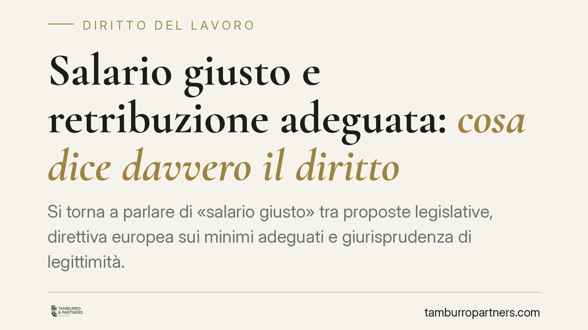

Salario giusto e retribuzione adeguata: cosa dice davvero il diritto
Si torna a parlare di «salario giusto» tra proposte legislative, direttiva europea sui minimi adeguati e giurisprudenza di legittimità. Al di là delle etichette, il tema tecnico è preciso: quando una retribuzione è «adeguata» ai sensi dell'art. 36 della Costituzione e quale ruolo hanno i contratti collettivi. Un chiarimento utile a datori di lavoro e responsabili del personale, soprattutto negli appalti.

Il quadro: tra proposte, direttiva UE e Costituzione
Il dibattito sul cosiddetto «salario giusto» si intreccia con almeno tre piani, che conviene tenere distinti.
Circolano ipotesi di intervento legislativo che affiderebbero al CNEL un ruolo tecnico di monitoraggio dei contratti collettivi e di individuazione dei contratti di riferimento per settore. Allo stato non risultano a noi confermati provvedimenti già in vigore con queste caratteristiche: alcuni riferimenti che circolano (un presunto decreto legge n. 62/2026 e una legge n. 112/2026) non ci risultano verificabili. Ne trattiamo quindi come possibili sviluppi normativi, non come diritto vigente.
Sul piano europeo il riferimento è la Direttiva (UE) 2022/2041 del 19 ottobre 2022, relativa a salari minimi adeguati nell'Unione. Non impone un minimo legale unico, ma chiede agli Stati di promuovere la contrattazione collettiva e, dove esiste un minimo legale, di renderlo adeguato. Il termine di recepimento indicato dalla direttiva è novembre 2024: anche questo dato va confermato sul testo ufficiale prima di ogni decisione operativa.
Il vero perno: art. 36 Cost. e il ruolo del giudice
Il fondamento resta l'art. 36 della Costituzione: la retribuzione deve essere proporzionata alla quantità e qualità del lavoro e comunque sufficiente ad assicurare al lavoratore e alla famiglia un'esistenza libera e dignitosa. È una norma immediatamente precettiva: il giudice può dichiarare inadeguata una retribuzione anche in presenza di un contratto formalmente sottoscritto.
Nella prassi, il parametro di adeguatezza è tradizionalmente stato il minimo tabellare del contratto collettivo di categoria. Ma questo automatismo si è incrinato. La Corte di Cassazione, con alcune pronunce del 2023, ha affermato che il minimo di un CCNL non è di per sé sufficiente a garantire il rispetto dell'art. 36: il giudice può discostarsene se ritiene quel minimo inadeguato, utilizzando anche altri parametri (indicatori statistici, altri contratti, soglie di povertà). È un passaggio rilevante, perché sposta il baricentro dalla contrattazione al controllo giudiziale.
Il nodo mai sciolto: l'efficacia dei contratti collettivi
Qui emerge il problema tecnico di fondo. L'art. 39 della Costituzione, nella parte che avrebbe reso i CCNL obbligatori per tutti (efficacia *erga omnes*), non è mai stato attuato. Di conseguenza il contratto collettivo vincola, in linea di principio, solo gli iscritti alle organizzazioni firmatarie.
Ogni meccanismo che voglia imporre un «salario giusto» generalizzato deve aggirare questo ostacolo. La via seguita è indiretta: non si impone il CCNL a tutti, ma si usa l'art. 36 come clausola di adeguatezza, di fatto trasformando i minimi contrattuali in soglia di riferimento tramite il giudice. Un intervento legislativo che affidasse al CNEL l'individuazione dei contratti «di riferimento» opererebbe sullo stesso crinale: fornirebbe un parametro tecnico senza attribuire, di per sé, efficacia generale al contratto.
In questo quadro assume rilievo il fenomeno dei cosiddetti contratti «pirata»: intese sottoscritte da sigle scarsamente rappresentative, con minimi più bassi. Applicarli non mette al riparo dal rischio di contenzioso ex art. 36, e negli appalti il tema si somma alla responsabilità solidale del committente per i trattamenti retributivi dovuti ai lavoratori dell'appaltatore (art. 29 d.lgs. 276/2003).
Implicazioni pratiche per l'impresa
Per un datore di lavoro il messaggio operativo è chiaro: la conformità formale a un contratto collettivo non basta più a chiudere ogni rischio. Ciò che conta è la rappresentatività del contratto applicato e l'adeguatezza sostanziale dei minimi. Il tema pesa in particolare in edilizia, logistica, servizi e pulizie, dove appalti e catene di subfornitura moltiplicano l'esposizione.
Cosa fare in concreto
- Verificare il CCNL applicato: accertare che sia sottoscritto da organizzazioni comparativamente più rappresentative, non da sigle marginali.
- Confrontare i minimi tabellari con quelli dei contratti leader di settore e con eventuali parametri statistici, individuando gli scostamenti critici.
- Mappare gli appalti in corso, inserendo clausole contrattuali sul trattamento retributivo minimo e obblighi di trasparenza a carico dell'appaltatore.
- Presidiare la responsabilità solidale richiedendo periodicamente evidenze del regolare pagamento delle retribuzioni ai lavoratori impiegati nell'appalto.
- Monitorare l'evoluzione normativa su recepimento della direttiva UE e su eventuali interventi legislativi, evitando di dare per acquisiti provvedimenti non ancora confermati.
È opportuno anticipare queste verifiche, anziché attendere un contenzioso o un accertamento ispettivo.
---
Contributo informativo a cura di Tamburro & Partners Avvocati - Avv. Giuseppe Tamburro. Non costituisce parere legale.
Ogni storia di lavoro ha i suoi tempi.
Se gestisci HR e vuoi un confronto su contenzioso, ispezioni o licenziamenti, scrivi allo studio. Ti rispondiamo entro un giorno lavorativo.